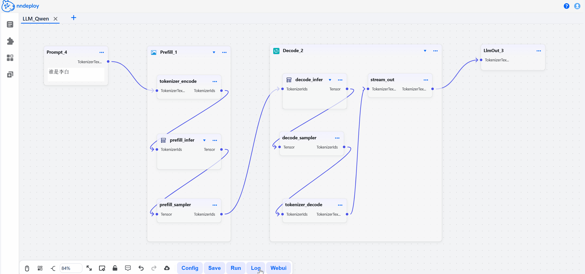
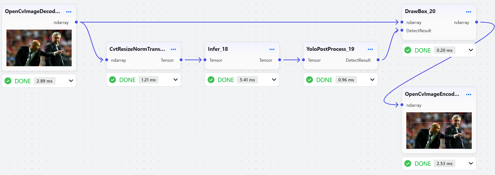
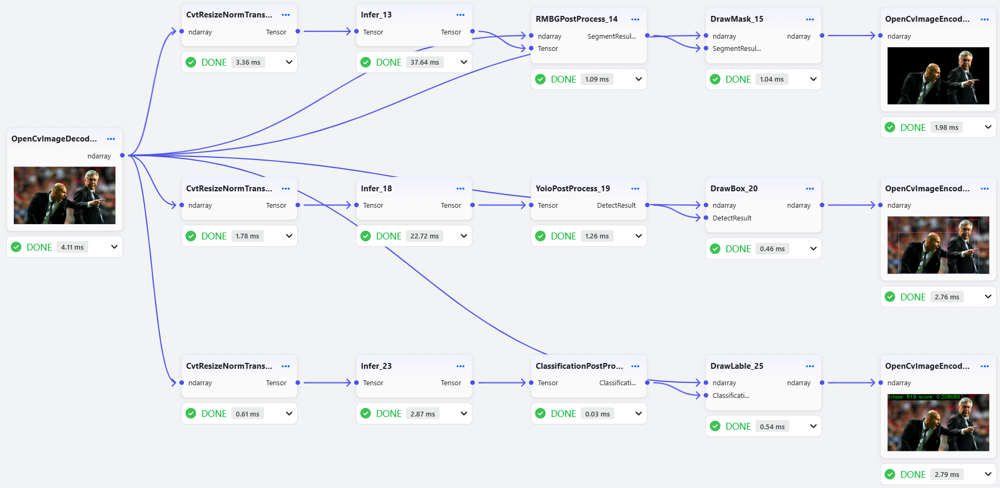

English | Simplified Chinese
nndeploy：一款简单易用和高性能的AI部署框架


文档 | Ask DeepWiki | Discord

最新动态¶
Introduction¶
nndeploy 是一款简单易用和高性能的AI部署框架。基于可视化工作流和多端推理，开发者可以快速从算法仓库开发出指定平台和硬件所需的 SDK，大幅节省开发时间。此外，框架已部署包括 LLM、AIGC 生成、换脸、目标检测、图像分割等众多 AI 模型，开箱即用。
简单易用¶
可视化工作流：拖拽节点即可部署 AI 算法，参数实时可调，效果一目了然。
自定义节点：支持 Python/C++自定义节点，无论是用 Python 实现预处理，还是用 C++/CUDA 编写⾼性能节点，均可无缝集成到与可视化工作流。
算法组合：灵活组合不同算法，快速构建创新 AI 应用。
一键部署：工作流支持导出为 JSON，可通过 C++/Python API 调⽤，适用于 Linux、Windows、macOS、Android、iOS 等平台
高性能¶
并行优化：支持串行、流水线并行、任务并行等执行模式
内存优化：零拷贝、内存池、内存复用等优化策略
高性能优化：内置 C++/CUDA/Ascend C/SIMD 等优化实现的节点
多端推理：一套工作流，多端推理，接入 13 种主流推理框架，覆盖云端、桌面、移动、边缘等全平台部署场景。如果有自定义推理框架，可完全独立使用，无需依赖任何第三方框架。
| 推理框架 | 适用场景 | 状态 |
|---|---|---|
| ONNXRuntime | 跨平台推理 | ✅ |
| TensorRT | NVIDIA GPU 高性能推理 | ✅ |
| OpenVINO | Intel CPU/GPU 优化 | ✅ |
| MNN | 阿里推出的移动端推理引擎 | ✅ |
| TNN | 腾讯推出的移动端推理引擎 | ✅ |
| ncnn | 腾讯推出的移动端推理引擎 | ✅ |
| CoreML | iOS/macOS 原生加速 | ✅ |
| AscendCL | 华为昇腾 AI 芯片推理框架 | ✅ |
| RKNN | 瑞芯微 NPU 推理框架 | ✅ |
| SNPE | 高通骁龙 NPU 推理框架 | ✅ |
| TVM | 深度学习编译栈 | ✅ |
| PyTorch | 快速原型/云端落地 | ✅ |
| 内部推理子模块 | 缺省推理框架 | ✅ |
开箱即用的算法¶
已部署模型列表，并制作了100+可视化节点。
| 应用场景 | 可用模型 | 备注 |
|---|---|---|
| 大语言模型 | QWen-2.5, QWen-3 | 支持小 B 模型 |
| 图片生成 | Stable Diffusion 1.5, Stable Diffusion XL, Stable Diffusion 3, HunyuanDiT 等模型 | 支持文生图、图生图、图像修复，基于diffusers实现 |
| 换脸 | deep-live-cam | |
| OCR | Paddle OCR | |
| 目标检测 | YOLOv5, YOLOv6, YOLOv7, YOLOv8, YOLOv11, YOLOx | |
| 目标追踪 | FairMot | |
| 图像分割 | RBMGv1.4, PPMatting, Segment Anything | |
| 分类 | ResNet, MobileNet, EfficientNet, PPLcNet, GhostNet, ShuffleNet, SqueezeNet | |
| API 服务 | OPENAI, DeepSeek, Moonshot | 支持 LLM 和 AIGC 服务 |
更多查看已部署模型列表详解
快速开始¶
步骤一：安装
pip install --upgrade nndeploy
步骤二：启动可视化界面
nndeploy-app --port 8000
启动成功后，打开 http://localhost:8000 即可访问工作流编辑器。在这里，你可以拖拽节点、调整参数、实时预览效果，所见即所得。

步骤三：保存并加载运行
在可视化界面中搭建、调试完成后，点击保存，工作流会导出JSON文件，文件中封装了所有的处理流程。你可以用以下两种方式在生产环境中运行：
方式一：命令行运行
用于调试
# Python CLI nndeploy-run-json --json_file path/to/workflow.json # C++ CLI nndeploy_demo_run_json --json_file path/to/workflow.json
方式2：在 Python/C++ 代码中加载运行
可以将 JSON 文件集成到你现有的 Python 或 C++ 项目中，以下是一个加载和运行LLM工作流的示例代码：
Python API 加载运行 LLM 工作流
graph = nndeploy.dag.Graph("") graph.remove_in_out_node() graph.load_file("path/to/llm_workflow.json") graph.init() input = graph.get_input(0) text = nndeploy.tokenizer.TokenizerText() text.texts_ = [ "<|im_start|>user\nPlease introduce NBA superstar Michael Jordan<|im_end|>\n<|im_start|>assistant\n" ] input.set(text) status = graph.run() output = graph.get_output(0) result = output.get_graph_output() graph.deinit()
C++ API 加载运行 LLM 工作流
std::shared_ptr<dag::Graph> graph = std::make_shared<dag::Graph>(""); base::Status status = graph->loadFile("path/to/llm_workflow.json"); graph->removeInOutNode(); status = graph->init(); dag::Edge* input = graph->getInput(0); tokenizer::TokenizerText* text = new tokenizer::TokenizerText(); text->texts_ = { "<|im_start|>user\nPlease introduce NBA superstar Michael Jordan<|im_end|>\n<|im_start|>assistant\n"}; input->set(text, false); status = graph->run(); dag::Edge* output = graph->getOutput(0); tokenizer::TokenizerText* result = output->getGraphOutput<tokenizer::TokenizerText>(); status = graph->deinit();
要求 Python 3.10+，默认包含ONNXRuntime、MNN，更多推理后端请采用开发者模式。
文档¶
性能测试¶
测试环境：Ubuntu 22.04，i7-12700，RTX3060
流水线并行加速。以 YOLOv11s 端到端工作流总耗时，串行 vs 流水线并行

| 运行方式\推理引擎 | ONNXRuntime | OpenVINO | TensorRT |
|---|---|---|---|
| 串行 | 54.803 ms | 34.139 ms | 13.213 ms |
| 流水线并行 | 47.283 ms | 29.666 ms | 5.681 ms |
| 性能提升 | 13.7% | 13.1% | 57% |
任务并行加速。组合任务(分割 RMBGv1.4+检测 YOLOv11s+分类 ResNet50)的端到端总耗时，串行 vs 任务并行

| 运行方式\推理引擎 | ONNXRuntime | OpenVINO | TensorRT |
|---|---|---|---|
| 串行 | 654.315 ms | 489.934 ms | 59.140 ms |
| 任务并行 | 602.104 ms | 435.181 ms | 51.883 ms |
| 性能提升 | 7.98% | 11.2% | 12.2% |
下一步计划¶
联系我们¶
如果你热爱开源、喜欢折腾，不论是出于学习目的，抑或是有更好的想法，欢迎加入我们
如果你有兴趣结合nndeploy和特定领域做开源项目，我们可以为你提供技术支持（nndeploy可以提供：可视化工作流、有向无环图、多端推理部署、通用性能优化、异构设备管理、丰富基础组件等等）
微信：Always031856（欢迎加好友，进群交流，备注：nndeploy_姓名）
致谢¶
感谢以下项目：TNN、FastDeploy、opencv、CGraph、tvm、mmdeploy、FlyCV、oneflow、flowgram.ai、deep-live-cam。
感谢HelloGithub推荐